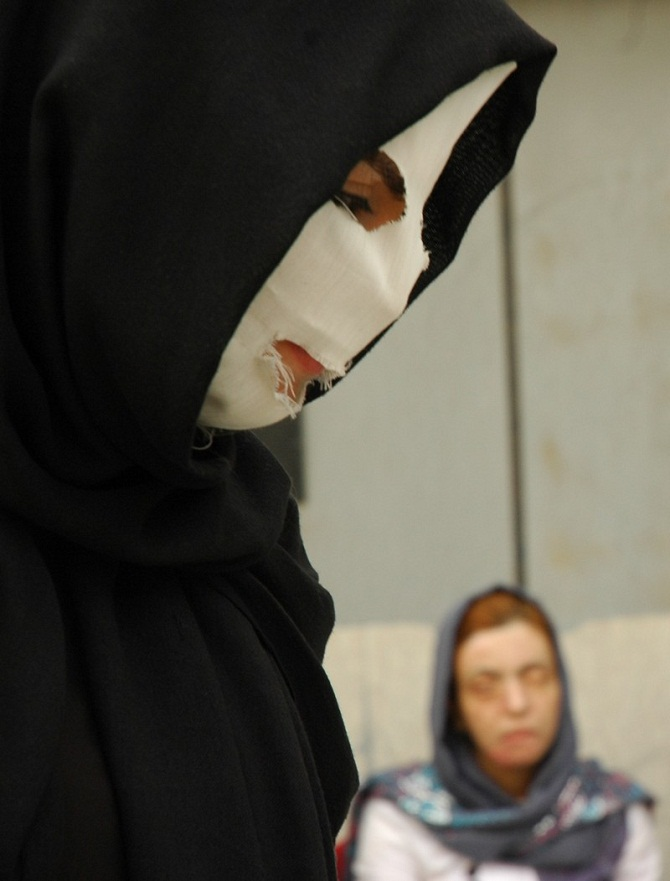
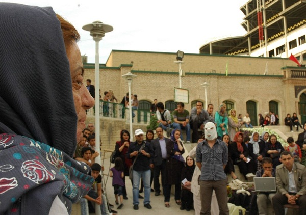
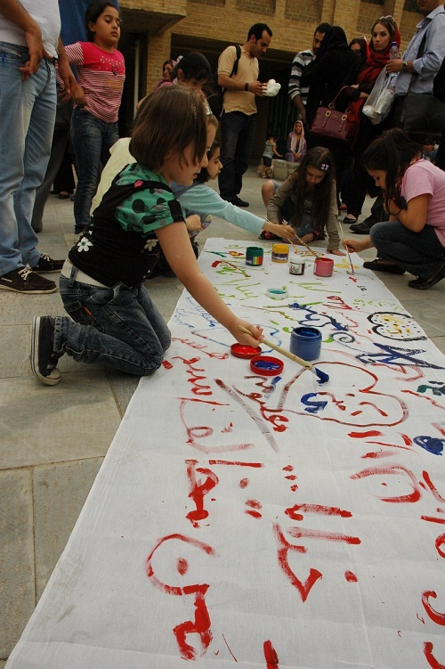

|
|

تئاتري درباره اسيدپاشي در تهران
شنبه23 اردیبهشت 1391
كانون زنان ايراني: تئاتر خياباني اسيدپاشي با نام "نقاش" با حضور معصومه عطايي از قربانيان اسيدپاشي و پخش صداي آمنه بهرامي در پارك شفق و در ميان مردم برگزار شد.
عصر هجدهم ارديببهشت ماه، در هوايي بهاري گروه تئاتر صلح، نمايش خود را به اسيد پاشي اختصاص دادند. آنها با روايت زندگي زنان قرباني اسيدپاشي از جمله زندگي آمنه بهرامي و يثري دختري كه در دوران نامزدي اش مورد حمله اسيدپاشي قرار گرفت و جانش را از دست داد؛ ماجراي اسيد و اسيدپاشي را در ميان مردم مطرح كردند .

بازيگران از خود مردم مي خواستند كه در اجراي اين نمايش مشاركت داشته باشند و به سوالات آنها جواب دهند. سوال هايي نظير اينكه چه كسي اسيد مي پاشد و يا چرا و در چه شرايطي اسيد مي پاشد؟ آيا قانوني درباره اسيد پاشي در ايران وجود دارد و اگر آري اين قانون چقدر به نفع قربانيان اسيدپاشي است؟
در ابتداي نمايش يك نقاش با بلوزي زردرنگ در ميداني كوچك با دوچرخه به دنبال مشتري است تا لقمه ناني از كشيدن صورت ديگران دربياورد... آقاي نقاش روزي با دختري مواجه مي شود كه تمام صورتش را باند پيچي كرده است،دختر از نقاش مي خواهد صورت او را نقاشي كند اما نقاش از چه نقاشي كند؟
از اين لحظه داستان زندگي آمنه بهرامي نقل مي شود.دختري كه از سال 1384 قرباني حمله اسيدي خواستگارش شد و زيبايي و بينايي اش را از دست داد. آمنه مي گويد: "از وقتي كه روي صورتم اسيد ريخته شده،نگرانم.نگران زيبايي تمام دختران سرزمينم."
در بخشي از اين نمايش صداي آمنه پخش شد .او كه حالا در اسپانيا به سر مي برد داستان زندگي اش را در اين گفتگوي تلفني گفت و خبر داد كه براي رونمايي كتاب داستان زندگي اش شهريور ماه به ايران مي آيد.
در ميان گفتگوهاي نقاش و دختري كه نقش آمنه را بازي مي كند ، افراد ديگر وارد مي شوند. مردي با قامتي بلند و لباسي مشكي از وضعيت اسيدپاشي در ايران مي گويد اينكه زنان بيشترين قربانيان اسيدپاشي هستند و ديگري با مطرح كردن قانون اسيدپاشي درايران از تماشاچيان سوال مي كند.

حاضران نيز واكنش نشان مي دهند. يكي از قوانيني مي گويد كه به نفع مردان است و ديگري از قصاص و مقابله به مثل حمايت مي كند. در اين لحظه معصومه عطايي از قربانياني كه دو سال پيش پدرشوهرش روي صورت او اسيدپاشيده، به ميان جمع مي آيد:" خيلي خوشحالم مسئله اسيد پاشي را مطرح مي كنيد. اما مسئله كنوني من قانون است. قانوني كه پدرشوهر مرا تنها دو ماه بازداشت كرد و اكنون آزادانه در بنگاه معاملات، ماشين خريد و فروش مي كند .حالا كه من موفق به گرفتن حكم قصاص شدم همين قانون مي گويد به خاطر نصف بودن ديه زن از ديه مرد، بايد 45 ميليون تومان بپردازم تا حكم قصاص را عملي كنم. به نظر شما اين كجاي عدالت است؟"
بغض گلوي معصومه را گرفته:" همين قانون مي گويد پسرم تنها تا هفت سالگي حق دارد پيش مادرش بماند و بعد از اين سن بايد با پدرش و خانواده پدري زندگي كند. پدر و پدربزرگي كه صلاحيت نگهداري آرين را ندارند."
يثري نيز از ديگر دختراني است كه سال گذشته در ايلام با حمله اسيدي جان خود را از دست داد.در اين نمايش روايت زندگي او نيز به نمايش درآمد و نام طاهره، شيرين، رعنا، سميه و ديگر قربانيان اسيدپاشي يادآوري شد و به نشانه حمايت از آنها تمامي بازيگران اين نمايش، ماسك هاي سفيد روي صورتشان گذاشتند.

در پايان نمايش پارجه اي سفيد رنگ روي زمين پهن شد و تماشاچيان درباره اسيدپاشي رويش نوشتند: "ما مخالف اسيد پاشي هستيم"،"قانون؟" و اسم هاي زنان قرباني اسيد پاشي روي پارچه ي سفيد به چشم مي خورد.
دومين نمايش گروه صلح درباره اسيدپاشي پنج شنبه بيستم اردبيهشت ماه در فرهنگسراي خاوران اجرا خواهد شد.
عکس: عالیه مطلب زاده